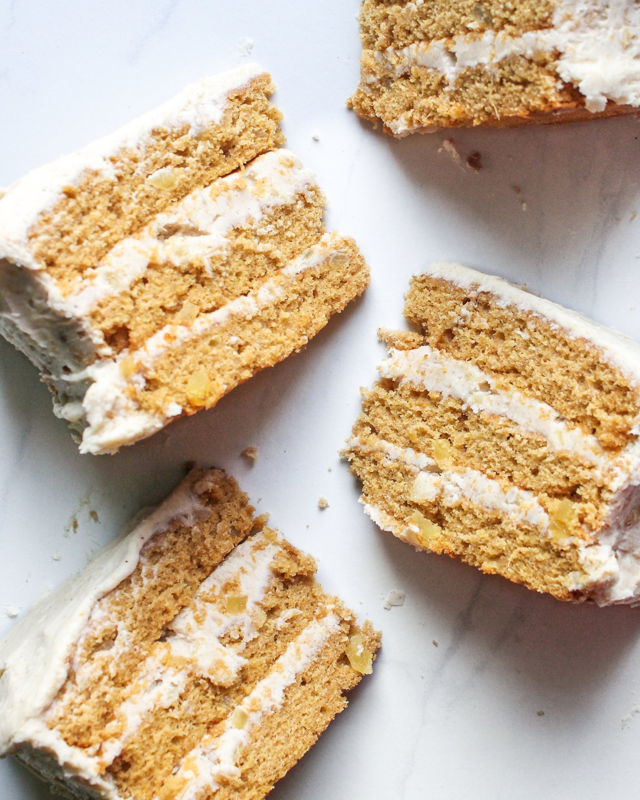
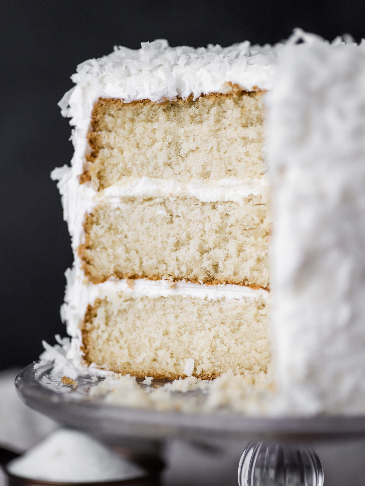

My Mom’s Coconut Cake Recipe

HOW TO MAKE MY MOM’S FAMOUS COCONUT CAKE
- Beat the cake mix, butter, water, and eggs for 4 minutes, until batter is smooth.
- Grease two 8” or 9” cake pans, and divide the batter between the pans.
- Bake at 350 F for 25 minutes.
- Cool cakes completely, then slice in half.
- In a large bowl, beat together the sugar, sour cream and shredded coconut.
- Reserve 1 cup of mixture for frosting.
- Stack cake layers, brushing each layer liberally with coconut milk and 1/3 of the filling mixture.
- Combine the reserved cup of filling mixture with the Cool Whip.
- Spread on top and sides of cake.
- Optional: Sprinkle with additional shredded coconut.
- Seal in an airtight container and refrigerate for 2-3 days before serving.

INGREDIENTS
- Golden butter cake mix (like Duncan Hines)
- Butter
- Water
- Eggs
- Granulated sugar
- Sour cream
- Shredded coconut, unsweetened
- Coconut milk
- Cool Whip

DO I REALLY HAVE TO REFRIGERATE THE CAKE FOR 2 DAYS?
- I’ll be honest with you… YES. I mean, no, you don’t HAVE to refrigerate this cake for 2-3 days before you eat it. This cake will taste delicious the second you finish making it, but something magical does happen when you let it sit in the fridge for a bit. The flavors just come together in a crazy way that you just have to taste to believe.
- So, I strongly urge you to have patience! Trust the process and refrigerate this coconut cake for a few days before diving in. Just trust me :)